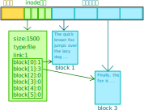
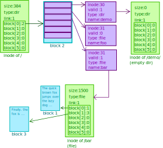
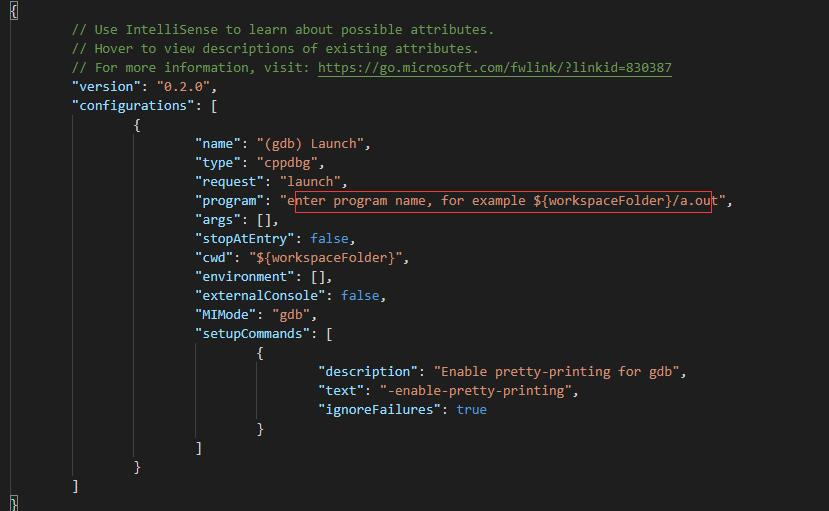

实验原理
1. Ext2文件系统原理简介
1.1 文件系统是什么？
文件系统是操作系统用于明确存储设备（磁盘）或分区上的文件的方法和数据结构；即在存储设备上组织文件的方法。简单地说文件就是在磁盘上组织文件的方法。
文件系统主要作用：
（1）管理和调度文件的存储空间，提供文件的逻辑结构、物理结构和存储方法;
（2）实现文件从标识到实际地址的映射，实现文件的控制操作和存取操作，提高磁盘查找数据的效率；
（3）实现文件信息的共享并提供可靠的文件保密和保护措施，提供文件的安全措施。
（4）优化磁盘空间利用率；
目前在各种操作系统中存在着各种各样的文件系统，在Windows平台主流有：FAT、FAT16、FAT32、NTFS等；在Unix平台主流的有：Ext2、Ext3、Ext4等。这些文件系统在管理磁盘时都有各自的一套策略和方法，随之也带来不同的优缺点。Ext2是GNU/Linux系统中标准的文件系统，其特点是存取文件的性能较好，对于中小型的文件更显示其优势。本实验以Ext2为模板，实现一个简单的文件系统。
1.2 Ext2文件系统的构成
一个物理磁盘可以划分为多个磁盘分区，每个磁盘分区可以从逻辑上看成是从0开始编号的大量扇区，各自可以格式化程不同类型的文件系统（如Ext2、NTFS等）。如果格式化成Ext2文件系统，则其内部按照Ext2的规范，将磁盘盘块组织成超级块、组描述符和位图、索引节点、目录等管理数据，放在分区前端称为元数据区，剩余空间用于保存文件数据。
1.2.1 整体布局
Ext2文件系统将盘块分成两大类：保存元数据（管理数据）的元数据盘块，以及存放文件内容数据的数据盘块。本实验中，为了降低实验难度，简化了元数据区的结构（由超级块和inode数组构成）。简化后的Ext2文件系统的基本布局如下所示：
系统主要包含以下三个部分：
- superblock ：超级块，包含整个系统的总体信息
- inode ：记录着文件的元数据，每个文件都与一个inode对应，但一个inode可能对应多个文件（硬链接）。在 本实验中可以认为一个inode对应一个文件。
- 数据块 ：记录文件内容
1.2.2 超级块
超级块是文件系统的起点系统，记录了文件系统全局性的一些信息。下面给出简化的超级块结构体示例：
typedef struct super_block {
int32_t magic_num; // 幻数
int32_t free_block_count; // 空闲数据块数
int32_t free_inode_count; // 空闲inode数
int32_t dir_inode_count; // 目录inode数
uint32_t block_map[128]; // 数据块占用位图
uint32_t inode_map[32]; // inode占用位图
} sp_block;
其中，幻数用于识别文件系统。比如说，如果实现的文件系统幻数为0xdec0de，那么如果读到的幻数不等于0xdec0de，则表示当前磁盘中无系统，系统损坏，或者是其他不识别的文件系统。
free_block_count，空闲数据块数
free_inode_count，空闲索引节点数据
dir_inode_count，指的是被占用的目录inode数
block_map，数据块位图，记录着数据块的使用情况，其用1个比特记录某一个数据块是否被占用。示例中共可表示128 * 32=4096个数据块的占用情况。
inode_map，索引节点盘块位图，记录着索引节点表的使用情况，也用1个比特记录某一个索引节点是否被使用。示例中共可表示32 * 32 = 1024个inode索引节点的占用情况。
1.2.3 文件的表示
对于每个文件，都会有一个inode结构体包含其元数据（文件类型，文件大小）等。以下是一个简化的inode示例。
struct inode {
uint32_t size; // 文件大小
uint16_t file_type; // 文件类型（文件/文件夹）
uint16_t link; // 连接数
uint32_t block_point[6]; // 数据块指针
};
文件的内容并不会保存在inode里，而是保存在另外的数据块中。inode里保存了相应数据块的索引值。读写文件时则通过索引值找到相应的数据块来读写。

每个索引节点内包含block_point[ ]数组用于记录文件的数据块所在位置（编号）。Ext2文件系统中的每个数据块大小为1KiB（即为两个512B的物理磁盘块），那么采用直接索引方式，一个文件不能超过 6个（数据块） * 1KB（数据块大小）= 6KB大小；当文件超过6KB时，需要用一级间接索引，如果文件继续增大，就需要二级或二级以上间接索引。（ 注：间接索引属于选做功能 ）
link：文件链接数（ 注：文件软链接与硬链接属于选做功能 ）
1.2.4 文件夹（目录）的表示
文件夹（目录）用于将整个文件系统的文件行程按路径名访问的树形组织结构排列。Ext2文件系统并没有单独形成用于目录数据的数据块，而是将目录与普通文件一样存放在数据块中。也就是说，文件夹（目录）在Ext2中的存储方式与文件一致。不同之处在于目录在数据块中的内容由文件系统直接管理，用户并不能像写普通文件一样直接使用编辑器写目录数据块中的内容。
目录在存储管理上和普通文件相同——也是通过索引节点来管理目录项数据的，只不过目录数据块内容含有多条目录项数据结构，即目录数据块中的内容是目录项的数组，通过上一级目录项将其类型标识为“目录”以区分普通文件。
根目录有固定的起点（例如Ext2文件系统根目录的索引号为2），因此根目录文件就不需要上级目录来定位了。
下面是简化的目录项结构体示例：
struct dir_item { // 目录项一个更常见的叫法是 dirent(directory entry)
uint32_t inode_id; // 当前目录项表示的文件/目录的对应inode
uint16_t valid; // 当前目录项是否有效
uint8_t type; // 当前目录项类型（文件/目录）
char name[121]; // 目录项表示的文件/目录的文件名/目录名
};
对于目录中的每一个目录项都对应了当前目录下的一个文件/目录。具体表示方式见下图：

图中 / 目录下第二个名为foo的目录项valid被标记为0，表示这一文件已被删除。当然也可以使用其他的删除方式，比如用后面的目录项覆盖被删除的目录项。
图中 /demo/ 目录为空目录，没有任何数据块。但事实上，空的目录中也应该有两个目录项，"."和".."，分别表示当前目录和上级目录。 本实验中不要求实现这两个目录项。
2 虚拟磁盘接口
本次实验提供了虚拟磁盘接口，头文件中提供了完备的注释。该接口底层实现简单，如果不想看大段的注释，直接看实现代码也未尝不可。
虚拟磁盘接口代码下载地址：https://gitee.com/hitsz-lab/os_lab/tree/master/code
// The size of one single disk block in bytes
#define DEVICE_BLOCK_SIZE 512
// Total disk size in bytes, 4 * 1024 * 1024 bytes (4 MiB) in total
int get_disk_size();
/**
* @brief Open the virtual disk.
* @return returns 0 on success, -1 otherwise.
* @note This function will open a file named "disk" as a vritual disk
* If the file is not found, it will try to create the file, and fill it with zeros of 4 MiB.
* This function must be called before any calls to disk_read_block() and disk_write_block().
* This function will fail if the disk is already opened.
*/
int open_disk();
/**
* @brief Close the virtual disk.
* @return returns 0 on success, -1 otherwise.
* @note This function will close the virtual disk file.
* After calling this function, all calls to disk_read_block() and disk_write_block() will fail
* util open_disk() is called again.
*/
int close_disk();
/**
* @brief Fill buf with the content of the block_num-th block.
* @param block_num The index of the block to be read.
* @param buf The pointer to the space where the function shall place the block content.
* @return returns 0 on success, -1 otherwise.
* @note The space of buf should be no less than DEVICE_BLOCK_SIZE.
* Make sure open_disk() is called before calling this function.
*/
int disk_read_block(unsigned int block_num, char* buf);
/**
* @brief Write content of buf to the block_num-th block.
* @param block_num The index of the block to be written.
* @param buf The pointer to the space where the data to be written to disk is placed.
* @return returns 0 on success, -1 otherwise.
* @note Make sure open_disk() is called before calling this function.
*/
int disk_write_block(unsigned int block_num, char* buf);
该接口模拟了对一个容量为4MiB的磁盘的操作。其中需要注意的是它保留了磁盘的访问特性，即按块访问，每次读写都需要读写完整的 512B 的磁盘块。这将引起一些很麻烦的情况，比如说要更新某个磁盘块中的某个inode时，需要先把整个磁盘块读出来，更新相应inode，再写回去，而不是直接往磁盘里写（除非一个inode比一个磁盘块大）。
3. 磁盘缓存简介（选做内容）
磁盘的访问速度远小于内存的访问速度，而现实中磁盘的容量也远大于内存，所以为了提速把整个磁盘内容读到内存中是不现实的。但是，我们还是有一些手段提高对磁盘的访问速度。根据局部性原理，最近被访问过的空间接下来也很可能被访问到，所以我们可以做一些缓存块，把最近最常被访问的数据放入缓存块中。如何管理缓存块，采取怎样的替换策略，以及在什么时机下写回，如何保证一致性，这些都是磁盘缓存需要考虑的问题。
4. 日志文件系统简介（选做内容）
日志机制是提高文件系统鲁棒性的一个重要机制。我们知道，创建文件等操作往往需要写不止一次磁盘，如：
- 写文件inode
- 写目录项
- 写超级块
如果在写完目录项但没开始写超级块时发生了内核崩溃或者停电等因素导致宕机，那么第一步被分配出去的inode就无法被记录为已分配，重启系统后文件系统有可能把这一inode分配给其他文件。
为了保证整个过程的原子性，我们可以加入日志机制。在磁盘中划出一块区域记为日志区。一开始不把更新后的数据写入数据区，而是把日志区状态记为记录中，并把更改写入日志区。写入完成后，把日志区状态改为写入中，并把日志区的更改更新到数据区。全部更新完成后，把日志区状态记为空闲。
如果在记录时系统崩溃，在重启后会发现日志区状态为记录中。此时只需简单地丢弃日志内容，改状态为空闲，即可。这种情况下文件创建就好像从未发生过一样。
如果在写入时系统崩溃，在重启后会发现日志区状态为写入中。此时日志区的更新信息是完整的，只是不知道崩溃前写到了哪一步。此时只要把日志区的信息全部重新写入到数据区，再把状态记为空闲，即可恢复被打断的操作。
5. Linux下的C语言编译
5.1 安装编译器和调试器
要在Linux下编译C语言程序，首先需要编译器gcc。 使用以下命令检查是否已经安装gcc：
gcc --verion
如果输出类似（不一定完全一致）以下输出，则gcc已经安装好。
gcc (Ubuntu 9.3.0-17ubuntu1~20.04) 9.3.0
Copyright (C) 2019 Free Software Foundation, Inc.
This is free software; see the source for copying conditions. There is NO
warranty; not even for MERCHANTABILITY or FITNESS FOR A PARTICULAR PURPOSE.
未安装gcc则会出现如下错误：
gcc: command not found
如果没有安装，可使用以下命令（Ubuntu/Debian）安装gcc：
sudo apt install gcc
调试器gdb的检查和安装类似于gcc： 检查：
gdb --version
安装：
sudo apt install gdb
5.2 选择合适的编译方式
编译和调试方式有两种：
- 使用IDE
- 使用命令行
其中IDE需要图形化的桌面系统，即只有虚拟机才能使用IDE。使用服务器的同学只能使用命令行编译。
5.2.1 命令行编译（Makefile）
文件的命令行下编译（不要加尖括号）：
gcc <所有要编译的.c文件，注意用空格隔开> -o <输出的可执行文件的文件名>
// example：
gcc shell.c disk.c -o shell
部分函数需要额外的链接库，如pthread_create()需要 -lpthread，但本实验中应该不需要额外的库。 如果需要，可自行百度加上所需的库。
也可以把命令行写成Makefile文件，通过make命令即可完成整个工程编译。
以下给出一个Makefile的参考示例：
all: shell
hello: main.o disk.o shell.o
gcc main.o disk.o shell.o -o shell
main.o: main.c
gcc -c main.c
disk.o: disk.c
gcc -c disk.c
hello.o: shell.c
gcc -c shell.c
clean:
rm -rf *o shell
目标all只有依赖，没有系统命令。为了去执行正确，它必须满足所有的目标所依赖的。目标都回去搜索所有的依赖，然后去执行它。在例子中，我们看到了clean的目标，clean这个目标就是清除中间生成的.o文件和那些可执行文件。
当然，也可以通过使用变量来改变编译的一些选项，上述Makefile例子的进一步简化如下：
cc = gcc
prom = shell
src = main.c disk.c shell.c
$(prom): $(src)
$(cc) -o $(prom) $(src)
clean:
rm -rf *o shell
如果我们只修改的.h头文件时，上述make就无法察觉到变化，所以有必要为头文件专门设置一个常量，并将其加入到依赖关系表中。
cc = gcc
prom = shell
deps = shell.h
obj = main.o disk.o shell.o
$(prom): $(obj)
$(cc) -o $(prom) $(obj)
%.o: %.c $(deps)
$(cc) -c $< -o $@
clean:
rm -rf $(obj) $(prom)
%.o:%.c，这是一个模式规则，表示所有的.o目标都依赖于与它同名的.c文件（当然还有deps中列出的头文件）。
命令部分的<代表%.c。$@代表的是当前语句的目标，即%.o。这样一来，make命令就会自动将所有的.c源文件编译成同名的.o文件。不用我们一项一项去指定了。整个代码自然简洁了许多。
如果还想了解更多Makefile的和make的知识，请参考：
跟我一起写Makefile:MakeFile介绍：
Reading-Makefiles ：
http://www.gnu.org/software/make/manual/make.html#Reading-Makefiles
5.2.2 命令行编译（CMake）
对于一个大型工程，编写Makefile实在是件复杂的事情。有没有工具能自动生成Makefile呢？当然有啦，比较好用的就是Cmake工具了，它能够输出各种各样的makefile，从而给程序员减轻负担。
在Linux平台下使用CMake生成Makefile并编译的流程如下：
1、编写CMake配置文件CMakeLists.txt
2、执行命令cmake PATH或者ccmake PATH生成Makefile。ccmake和cmake的区别在于前者提供了一个交互式的界面。
3、使用make命令进行编译。
以下是来自计算机网络实验net_lab中的CMakeLists.txt，给大家提供一个参考：
# CMake 最低版本号要求
cmake_minimum_required(VERSION 3.0.0)
# 项目信息
project(net VERSION 0.1.0)
# 添加头文件
include_directories(./include ./pcap)
# 查找当前目录下的所有源文件，并将名称保存到DIR_SRCS变量
aux_source_directory(./src DIR_SRCS)
# 指定生成目标
add_executable(main ${DIR_SRCS})
# 添加链接库
target_link_libraries(main pcap)
如果要使用CMake工具，还需要安装依赖（ubuntu环境下）：
sudo apt-get install cmake make
和计算机网络实验一样，在写好CMakeLists.txt文件后，也可以使用VSCode CMake工具来编译，具体请参考《计算机网络实验指导书》附录A.3.3。
5.2.3 IDE编译
Linux环境下也支持IDE编辑/编译器，比如CodeBlocks、Eclipse CDT、Netbeans等等。请同学自行搜索这些IDE的用法。
5.3 GDB调试
注意 ：如果需要调试，使用 gcc 编译时需要加入调试选项 -g 加入调试符号，如下：
gcc -g <所有要编译的.c文件，注意用空格隔开> -o <输出的可执行文件的文件名>
// example:
gcc -g hello.c disk.c -o hello
gdb的命令行使用起来较为复杂，如果需要体验命令行版本的gdb，请自行百度用法。
下面介绍如何使用 vscode 运行gdb（也可以参考《计算机网络实验指导书》附录A.3.3 如何进行编译和调试。
Step1： 使用vscode打开代码所在文件夹。
Step2： 关闭所有打开的文件
Step3： 按下
Step4： 将自动生成的launch.json中的 program 设成编译步骤中的<输出的可执行文件的文件名>  如：
"program":"${workspaceFolder}/hello",
// ${workspaceFolder} 表示当前vscode所打开的文件夹
Step5： 再次按下
上述步骤中对一个工程只需执行一遍，后续调试直接按下